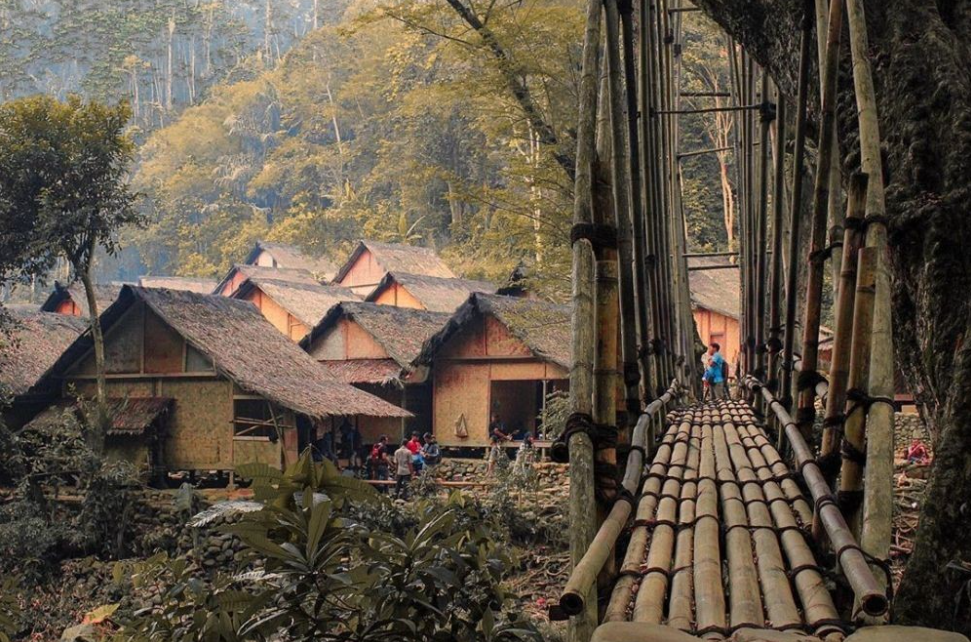
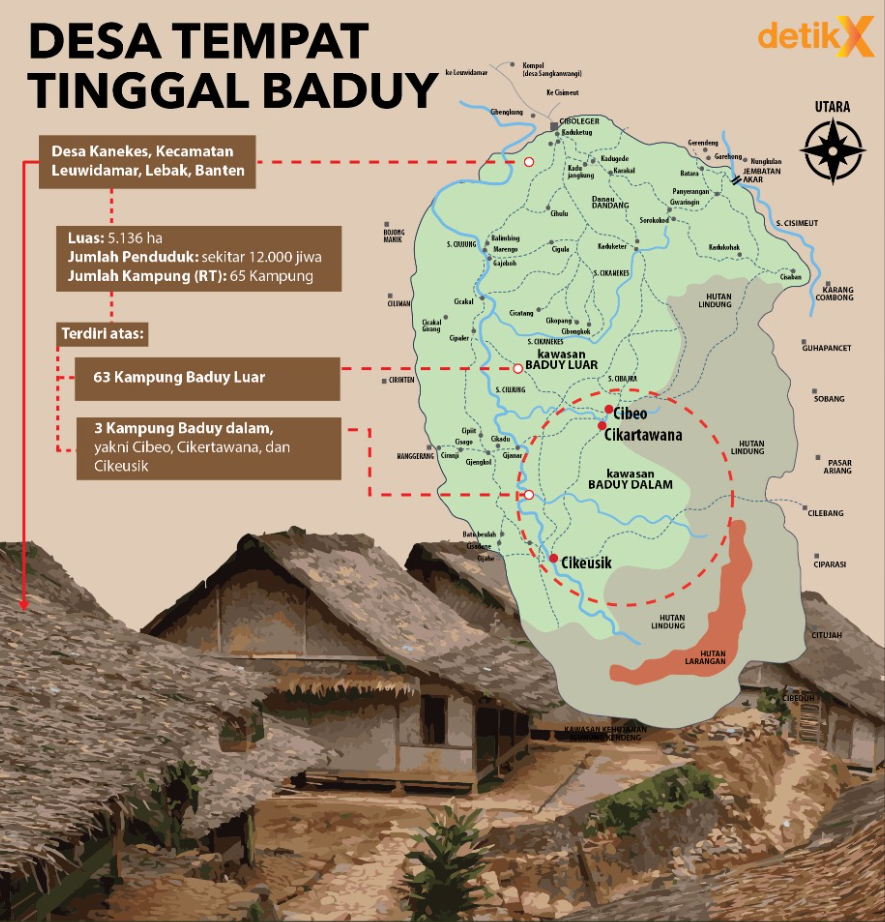
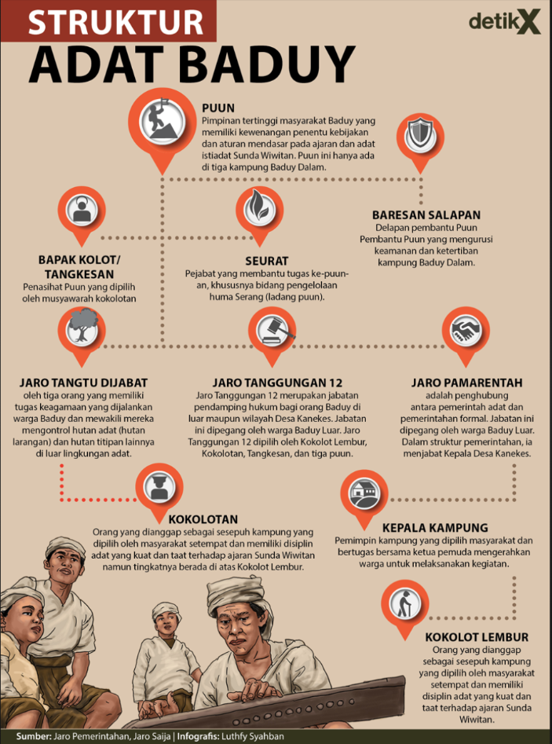
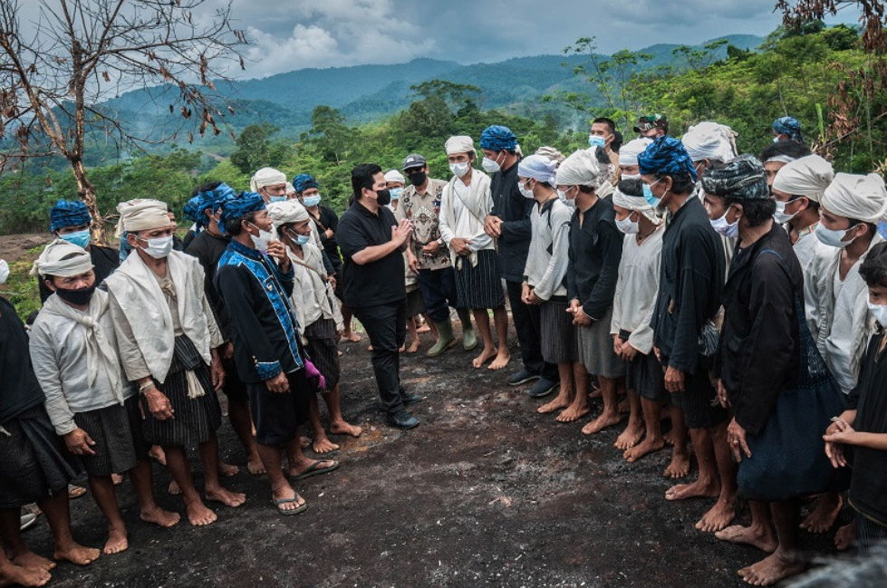
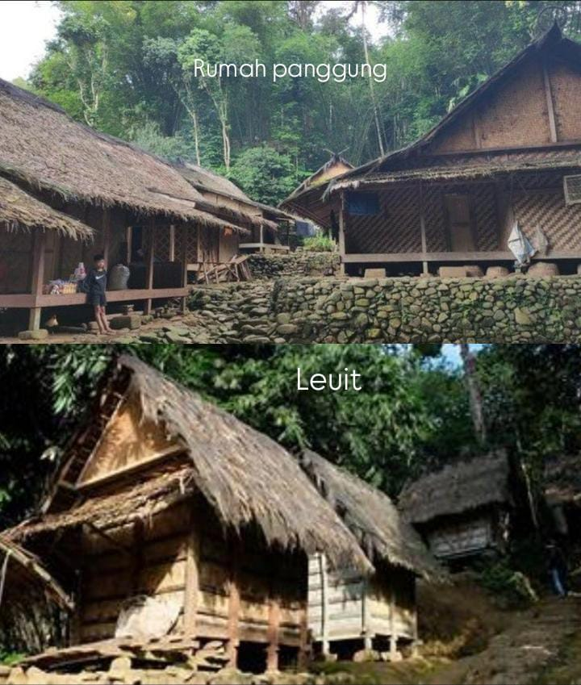
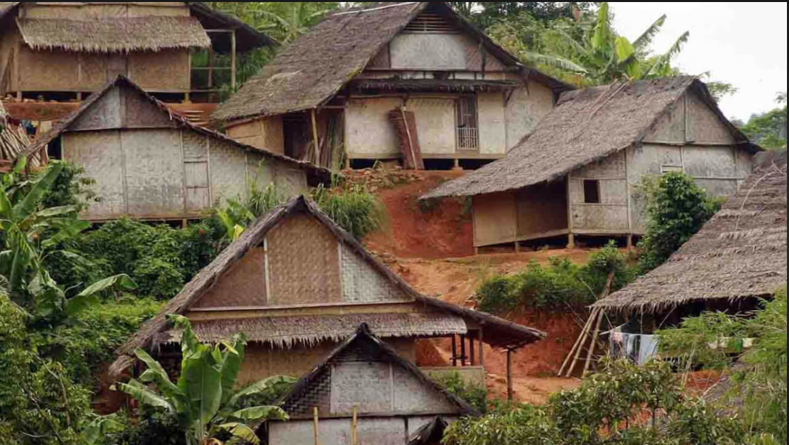
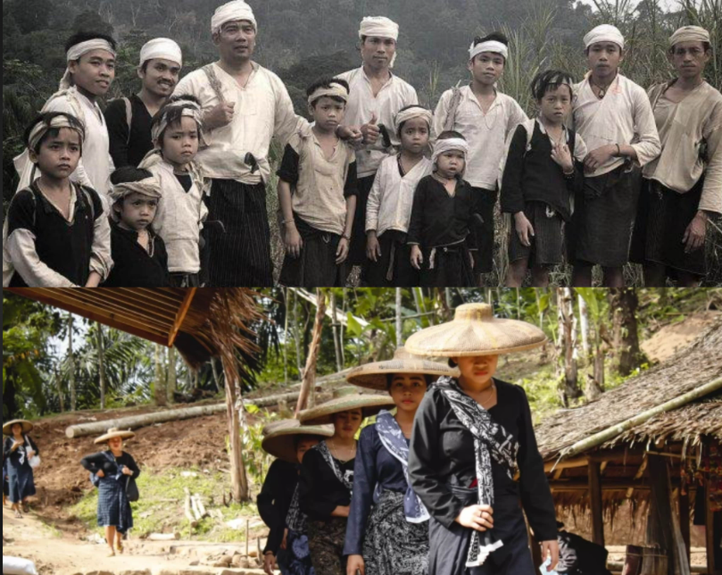
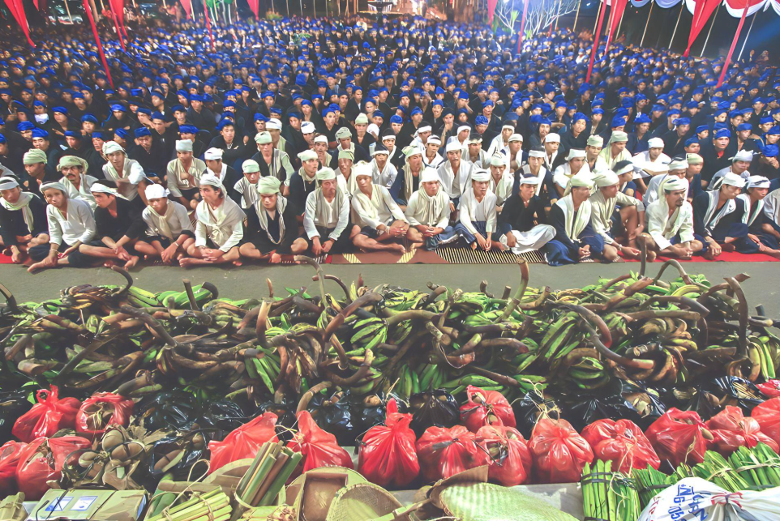
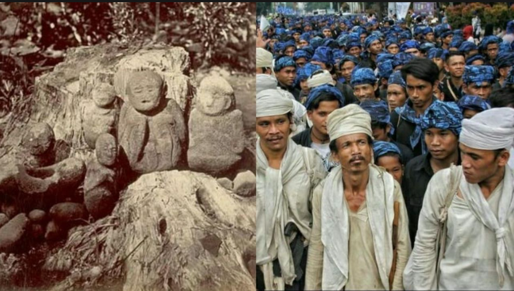
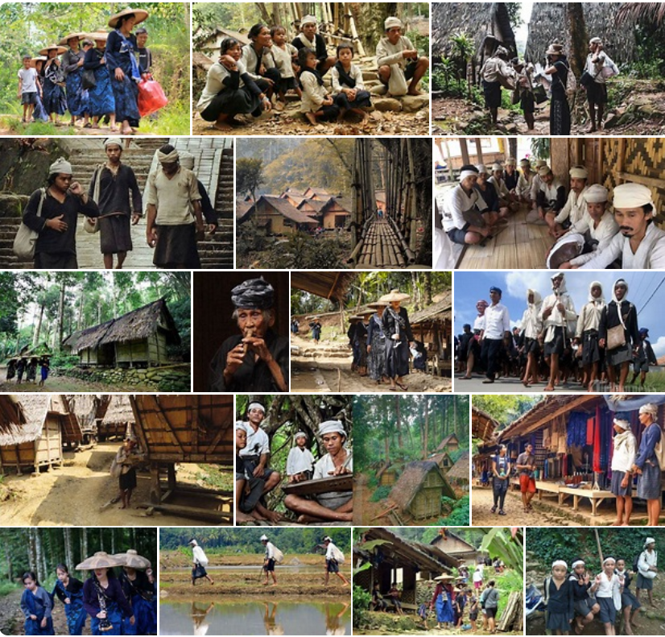

Sajarah Singget Kampung Adat Baduy
Kampung Adat Baduy, atanapi Kanekes, mangrupikeun kelompok masarakat adat Sunda anu hirup di wewengkon pagunungan Kendeng, Désa Kanekes, Kacamatan Leuwidamar, Kabupatén Lebak, Banten. Masarakat Baduy dipikawanoh ku cara hirupna anu saderhana sareng ngajaga adat istiadat karuhunna.
Lokasi Kampung Adat Baduy
Kampung Adat Baduy perenahna di Désa Kanekes, Kacamatan Leuwidamar, Kabupatén Lebak, Banten. Wewengkonna aya di daérah aliran walungan Ciujung anu kalebet kana wilayah Cagar Budaya Pagunungan Kendeng.
Struktur Organisasi Kampung Adat Baduy
Struktur organisasi masarakat Baduy diwangun ku tilu bagian utama: 1. Pu'un (kapala adat) - Pu'un Pamingpin adat pangluhurna anu nyepeng kawenangan dina sagala urusan adat sareng kahirupan masarakat. 2. Baris Kolot (dewan adat) - Déwan adat anu ngabantosan Pu'un dina nyandak kaputusan penting. 3. sareng Jaro (lurah) - Lurah anu ngabantosan Pu'un dina ngatur kahirupan sapopoé masarakat.
Sesebutan Ketua Adat dan Menteri-menteri
Pu'un : Sebutan kanggo ketua adat pangluhurna. Baris Kolot : Sebutan kanggo anggota déwan adat. Jaro : Sebutan kanggo lurah atanapi pamingpin wilayah.
Ngaran Imah atau Bangunan Kampung
Imah adat di Baduy disebat "imah panggung" anu diwangun tina kai sareng awi kalayan hateup tina daun nipah. Aya ogé "leuit" kanggo neundeun pare.
Jumlah Bangunan
Jumlah imah di Kampung Adat Baduy gumantung kana jumlah kulawarga. Imah-imahna diwangun sacara tradisional sareng ngajaga kasaimbangan sareng alam.
Aturan / Kapamalian Kampung
Masarakat Baduy ngagaduhan aturan adat anu ketat, sapertos henteu nganggo alat éléktronik, henteu nganggo kendaraan, sareng henteu nganggo bahan kimia. Aranjeunna ogé ngajaga alam sareng lingkungan sacara saksama. Larangan teknologi - Teu kénging nganggo alat éléktronik, kendaraan bermotor, sareng bahan kimia. Konservasi Alam - Ngajaga sareng ngalestarikeun alam sareng lingkungan sakitar. Acuk - Pakean adat anu khas sareng saderhana. Larangan ngagunaken alas kaki - Khusus kanggo Baduy Dalam.
Ngaran Upacara-upacara Adat
Aya sababaraha upacara adat di Baduy, sapertos upacara Seba (ngunjungan kapala daerah), upacara Kawalu (puasa), sareng upacara Seren Taun (syukuran panén).
Agama / Kapercayaan Anu Dianut
Masarakat Baduy nganut kapercayaan Sunda Wiwitan, anu mangrupikeun kapercayaan karuhun anu ngahormatan alam sareng karuhun.
Fakta Unik Kampung Adat Baduy
Baduy dibagi jadi dua bagian: Baduy Dalam sareng Baduy Luar. Baduy Dalam leuwih ketat dina ngajaga adat. Masarakat Baduy dipikawanoh ku kaahlian ninun sareng ngahasilkeun lawon anu berkualitas. Babagian Wewengkon - Baduy Dalam sareng Baduy Luar kalayan bédana tingkat kataatan kana adat. Kaahlian Nenenun - Masarakat Baduy dipikawanoh ku kaahlian nenenun lawon anu berkualitas. Kearifan Lokal - Kuatna tradisi lisan sareng panolakan kana modernisasi.